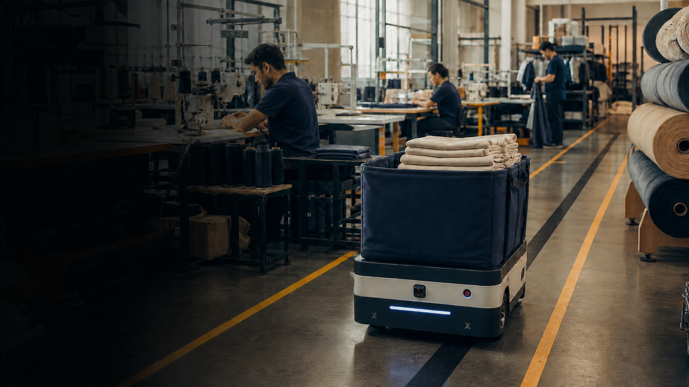

Computer Vision
Detection, tracking, OCR, image processing, edge inference, and responsible workforce analytics.

AI ENGINEER · GARMENT MANUFACTURING
I combine Computer Vision, machine learning, and automation with seven years of hands-on garment production experience—turning factory problems into practical AI systems.
AI concept visualization · Garment-factory application
Before becoming an AI Engineer, I spent seven years working with Singer, overlock, and coverstitch machines.
That experience gave me a practical view of production rhythm, operator effort, line handoffs, quality pressure, and the difference between a clever demo and a tool a factory can actually use.
My focus is not AI for its own sake. It is better visibility, less repetitive movement, clearer decisions, and technology that supports skilled garment workers.
Detection, tracking, OCR, image processing, edge inference, and responsible workforce analytics.
Transform labor, output, efficiency, overtime, and quality data into operational insight.
Connect sensing, APIs, mobile systems, and physical workflows to practical factory use cases.
A focused portfolio across material movement, production intelligence, and workforce visibility.
Originally built to deliver medicine while reducing exposure around infectious-disease patients. The portfolio case study translates the same mobile-delivery idea into moving cut panels and garment bundles between production stations.
An interactive garment-operations dashboard connecting paid labor hours to output, productivity, overtime, target attainment, and defect rates across departments and production lines.
A two-zone computer-vision concept: faces are matched only at the employee entrance for attendance, while production cameras anonymously show workers at machines in green and workers away in red.

 CAM 01 · ENTRY FACE CHECK-IN
CAM 01 · ENTRY FACE CHECK-IN
Singer · Overlock · Coverstitch
Seven years of hands-on production-floor experience operating industrial garment machines and understanding real line workflows.Dark Pyramid
Trained classification models across 1,000+ classes and developed fine-grained small-object detection pipelines using Python, PyTorch, TensorFlow, OpenCV, and YOLO.Resala Training Centers
Taught Python and Machine Learning through hands-on projects, supporting the development of 12 students.Helwan International Technological University · GPA 3.5
AI engineering foundation spanning computer vision, data science, deployment, cloud, and intelligent applications.PyTorch · TensorFlow · OpenCV · YOLO · Scikit-learn · OCR · Object Detection · Tracking
Python · SQL · FastAPI · Docker · Kubernetes · Linux · Git · REST APIs
AWS · Azure · Edge AI · Raspberry Pi · Mobile AI · PostgreSQL · MongoDB
LLMs · RAG · AI Agents · LangChain · Vector Databases · Automation
OPEN TO ON-SITE FULL-TIME ROLES IN CAIRO